Chapitre III — Concepts fondamentaux
Avant d'aborder les méthodes statistiques, il est essentiel de maîtriser le vocabulaire et les concepts de base de l'analyse quantitative. Cette section présente les notions fondamentales qui seront utilisées tout au long du cours.
III.1 Le tout vs la partie
Un des buts fondamentaux des statistiques est d'évaluer les caractéristiques d'une population donnée. Malheureusement, dans certains cas1, il est difficile, coûteux, ou tout simplement impossible de recueillir des données sur l'ensemble de la population. C'est pourquoi on se contente souvent d'étudier un échantillon représentatif de cette population. On se donne donc du vocabulaire permettant de distinguer ce que l'on veut étudier : les paramètres de la population, de ce que l'on peut réellement mesurer : les statistiques de l'échantillon.
III.1.1 Population et échantillon
La population (ou univers) est l'ensemble complet de tous les éléments qui font l'objet d'une étude statistique.
Notation (Taille de la population) : $N$ (pas toujours connu).
Comme le note la définition, la population dépend de l'étude statistique envisagée. Par exemple, si je veux réaliser une étude sur les préférences musicales des élèves du Cégep André-Laurendeau, ma population sera l'ensemble des élèves inscrits dans ce Cégep. L'ensemble de tous les cégépiens du Québec n'est pas ma population pour cette étude spécifique : c'est un ensemble trop grand. De même, l'ensemble des élèves des sections techniques d'André-Laurendeau n'est pas ma population, car je veux inclure tous les élèves, peu importe leur programme d'études.
Autres exemples de populations :
-
Dans le cadre d'une étude sur les intentions de vote à l'élection provinciale, la population est l'ensemble de tous les habitants du Québec (population finie et à un moment donné, fixée).
-
Si je veux connaitre le temps moyen d'attente avant d'être servi dans un restaurant, ma population peut être l'ensemble de toutes les commandes passées par des clients dans ce restaurant. Cette population, quoique finie en pratique, est "potentiellement infinie" car de nouvelles commandes peuvent toujours être passées.
-
Pour une étude sur le taux de réussite des programmes d'études universitaires au Canada, la population peut être l'ensemble de toutes les filières universitaires offertes dans le pays.
Attention, comme le montrent les exemples précédents, la population n'est pas toujours un ensemble de personnes. Elle peut aussi être un ensemble d'objets, d'événements, de mesures...
Les populations étudiées dans ce cours seront dans tous les cas finies.
Un échantillon est un sous-ensemble de la population, sélectionné pour être étudié.
Notation (Taille de l'échantillon) : $n$ (où $n < N$)
L'échantillon doit être représentatif de la population pour permettre des généralisations valides. Les questions de comment choisir un échantillon représentatif, de mesurer la représentativité, et de corriger les biais d'échantillonnage sont centrales et seront abordées plus tard dans le cours.
Je veux savoir si les élèves de ma classe de statistiques (population) ont bien compris ce que je viens d'expliquer. Je demande aux élèves du premier rang (échantillon) s'ils ont compris. Cet échantillon n'est probablement pas représentatif de la population, car les élèves du premier rang sont souvent les plus attentifs. A priori, choisir de demander aux élèves dont le nom de famille commence par A, B ou C serait un échantillon plus représentatif, car il n'y a pas de raison que la compréhension des statistiques soit liée à l'ordre alphabétique des noms de famille.
L'unité statistique (ou individu statistique) est chaque élément de la population ou de l'échantillon sur lequel on effectue des observations.
Dans une étude sur la performance scolaire, chaque étudiant est une unité statistique.
On a vu dans la partie sur la méthodologie de la recherche scientifique différentes méthodes de sélection d'un échantillon (aléatoire : simple, systématique, stratifié, par grappes et non aléatoire : de convenance, volontaire, boule de neige, par quota). Le choix de la méthode d'échantillonnage dépend de la nature de la population, des ressources disponibles et des objectifs de l'étude.
On appelle taux d'échantillonnage (ou taux de sondage) le rapport entre la taille de l'échantillon et la taille de la population, soit $\frac{n}{N}$ : c'est la proportion de la population qui est incluse dans l'échantillon.
On appelle poids d'échantillonnage (ou poids de sondage) l'inverse du taux d'échantillonnage, soit $\frac{N}{n}$ : c'est le nombre d'unités de la population que représente chaque unité de l'échantillon.
Supposons que nous avons une population de 1000 individus et que nous sélectionnons un échantillon de 100 individus. Le taux d'échantillonnage est alors $\frac{100}{1000} = 0.1$ (10%), ce qui signifie que nous avons inclus 10% de la population dans notre échantillon. Le poids d'échantillonnage est l'inverse de ce taux, soit $\frac{1000}{100} = 10$, ce qui signifie que chaque individu de l'échantillon représente 10 individus de la population.
III.1.2 Paramètres et statistiques
Je ne saurais trop insister sur l'importance de distinguer clairement les paramètres de la population des statistiques de l'échantillon. Encore une fois, une large part du travail du statisticien consiste à estimer les paramètres inconnus de la population à partir des statistiques calculées sur un échantillon.
Un paramètre est une valeur numérique qui décrit une caractéristique de la population. Les paramètres sont généralement inconnus et notés avec des lettres grecques.
On verra dans la suite du cours les paramètres suivants (entre autres) :
-
$\mu$ (mu) : moyenne de la population
-
$\sigma$ (sigma) : écart-type de la population
Une statistique est une valeur numérique calculée à partir des données d'un échantillon. Les statistiques sont notées avec des lettres latines.
On verra dans la suite du cours les statistiques suivantes (entre autres) :
-
$\bar{x}$ : moyenne de l'échantillon
-
$s$ : écart-type de l'échantillon
III.2 Variables
Une fois la méthodologie de collecte des données établie et l'échantillon constitué, on commence à récolter les données.
Une donnée est une valeur mesurée ou observée pour une variable sur une unité statistique.
Une variable est une caractéristique mesurée ou observée sur chaque unité statistique. Les variables peuvent être classées selon leur nature et leur échelle de mesure.
En d'autres termes, pour chaque unité statistique (individu) de l'échantillon, on mesure ou observe une ou plusieurs caractéristiques (variables) qui prennent des valeurs spécifiques (données).
III.2.1 Variables et types de données
Les variables peuvent prendre différentes natures selon le type de données qu'elles représentent. On distingue principalement deux grandes catégories de variables : les variables qualitatives (ou catégorielles) et les variables quantitatives (ou numériques). Dans chaque catégorie, il existe des sous-types de variables.
Variables qualitatives
Une variable qualitative décrit une caractéristique non numérique qui peut être classée en catégories ou groupes. Les variables qualitatives peuvent être divisées en deux sous-types : nominales et ordinales.
Variable dont les catégories n'ont pas d'ordre naturel. Les valeurs sont des étiquettes ou des noms. On peut seulement dire si deux valeurs sont égales ou différentes. On les appelle aussi variables catégorielles.
-
Sexe : masculin, féminin, autre
-
Province de résidence : Québec, Ontario, Colombie-Britannique, etc.
-
Couleur préférée : rouge, bleu, vert, etc.
-
État civil : célibataire, marié, divorcé, veuf
Variable dont les catégories ont un ordre naturel, mais sans distance mesurable entre elles. En plus de pouvoir dire si deux valeurs sont égales ou différentes, on peut aussi dire si une valeur est supérieure ou inférieure à une autre.
-
Niveau de scolarité : primaire, secondaire, collégial, universitaire
-
Niveau de satisfaction : très insatisfait, insatisfait, neutre, satisfait, très satisfait
-
Classement : premier, deuxième, troisième
-
Taille de vêtement : XS, S, M, L, XL
On appelle les valeurs prises par des variables qualitatives des modalités.
Variables quantitatives
Une variable quantitative représente une caractéristique mesurable qui peut être exprimée numériquement.
Les variables quantitatives peuvent être divisées en fonction des opérations mathématiques qui peuvent être effectuées sur elles (intervalle vs rapport) et de la nature des valeurs qu'elles peuvent prendre (discrète vs continue).
Une variable d'intervalle est une variable quantitative pour laquelle les différences entre les valeurs sont significatives et mesurables, mais qui ne possède pas de zéro absolu (le zéro est arbitraire). En plus de pouvoir tester l'égalité et l'ordre, on peut mesurer les distances entre les valeurs (au sens de calculer leur différence), mais pas les rapports.
-
Température en degrés Celsius ou Fahrenheit : la différence entre 20 °C et 30 °C est la même qu'entre 30 °C et 40 °C, mais 0 °C ne signifie pas "absence de température". Pour cette raison, on ne peut pas dire que 40 °C est deux fois plus chaud que 20 °C, car en degrés Fahrenheit, ces deux températures correspondent à 104 °F et 68 °F respectivement, ce qui donne un rapport d'environ 1,53. Étant donné que la réalité physique de la température n'a pas changé, si le rapport dépend de l'unité de mesure cela signifie qu'on a une échelle d'intervalle, pas de rapport.
-
Dates du calendrier : l'écart entre 2000 et 2010 est de 10 ans, mais l'année 0 n'est pas un point d'origine absolu, c'est un choix arbitraire2. Par exemple, dans le calendrier musulman les années ont la même longueur, mais nous sommes en 1447 AH (après l'Hégire).
Une variable de rapport (ou ratio) est une variable quantitative qui possède toutes les propriétés de l'échelle d'intervalle, mais avec en plus un zéro absolu qui signifie l'absence totale de la caractéristique mesurée. On peut donc effectuer toutes les opérations arithmétiques, y compris les rapports ainsi que tester l'égalité et l'ordre.
Attention, par "zéro absolu", on entend que le zéro représente l'absence totale de la quantité mesurée ce qui place le zéro à un point fixe et non arbitraire sur l'échelle de mesure. Cependant, on peut tout à fait avoir des valeurs négatives dans une variable de rapport. Par exemple, si on considère le patrimoine total d'une personne (actifs moins passifs), une valeur de $-5000$ \$ signifie que la personne a 5000 \$ de dettes nettes, donc une absence de richesse. Le zéro représente bien l'absence de richesse, mais on peut tout à fait être en dessous de ce zéro.
Taille, poids, âge, revenu, distance parcourue depuis un point fixé, durée depuis un instant fixé, nombre d'objets, score à un examen, etc.
Attention à nouveau : on donne comme exemple pour les variables d'intervalle la date du calendrier et comme exemple pour les variables de rapport le temps écoulé depuis un instant fixé. Cela n'est pas contradictoire : il n'y a pas de sens à dire "l'année 2024 est deux fois plus tard que l'année 1012", mais il y a un sens à dire "Alice a attendu 30 minutes depuis son arrivée, deux fois plus longtemps que les 15 minutes d'attente de Bob". Retenez la différence suivante.
L'échelle d'intervalle a un zéro arbitraire (ex. : 0 °C ne signifie pas absence de température), tandis que l'échelle de rapport a un zéro absolu (ex. : 0 kg signifie absence de masse).
Le tableau suivant récapitule les différentes échelles de mesure et leurs propriétés.
| Échelle | Type | Propriétés | Opérations |
|---|---|---|---|
| Nominale | Qualitative | Classification, égalité | $=$ |
| Ordinale | Qualitative | Les précédentes + ordre | $=, <, >$ |
| Intervalle | Quantitative | Les précédentes + distance | $=, <, >, +, -$ |
| Rapport | Quantitative | Les précédentes + zéro absolu | $=, <, >, +, -, \times, \div$ |
Variables discrètes et continues
En plus d'être d'intervalle ou de rapport, les variables quantitatives peuvent être classées en fonction de la nature des valeurs qu'elles peuvent prendre.
Variable qui ne peut prendre qu'un nombre fini ou dénombrable de valeurs, généralement des nombres entiers.
-
Nombre d'enfants dans une famille : 0, 1, 2, 3, etc.
-
Nombre d'étudiants dans une classe : 15, 20, 25, etc.
-
Nombre de tentatives avant une réussite : 1, 2, 3, etc.
-
Score à un examen (sur 100) : 0, 1, 2, ..., 100
Variable qui peut prendre n'importe quelle valeur dans un intervalle donné.
-
Taille en centimètres : 165,5 cm, 170,2 cm, etc.
-
Poids en kilogrammes : 65,3 kg, 72,8 kg, etc.
-
Temps de réaction en secondes : 0,25 s, 0,31 s, etc.
-
Température en degrés Celsius : 22,5 °C, 23,1 °C, etc.
Certaines variables quantitatives peuvent être techniquement discrètes, mais sont souvent traitées comme continues en raison de la finesse des mesures. Par exemple, le revenu annuel peut être mesuré en dollars (discret), mais il est souvent traité comme une variable continue, car le nombre de valeurs possibles est très élevé, que les différences entre deux valeurs successives sont très petites par rapport à l'échelle globale et les valeurs possibles sont régulièrement espacées. Toutes les combinaisons des types de variables quantitatives sont possibles, comme l'illustre le tableau suivant.
| Discrète | Continue | |
|---|---|---|
| Intervalle | Score à un test de QI (valeurs entières, pas de zéro absolu) | Température en °C (peut prendre toutes valeurs, zéro arbitraire) |
| Rapport | Nombre d'enfants dans une famille (0, 1, 2, ...) | Taille, poids, durée, revenu (valeurs continues, zéro absolu) |
III.2.2 Variables dépendantes et indépendantes
Dans une étude de relation entre variables, on distingue :
La variable indépendante (ou variable explicative, prédictive) est la variable que le chercheur manipule ou observe pour en étudier l'effet. Elle est considérée comme la cause dans une relation de causalité.
Notation : Généralement notée $X$
-
Nombre d'heures d'étude (pour prédire la performance)
-
Dose d'un médicament (pour étudier son effet)
-
Niveau d'éducation (pour expliquer le revenu)
La variable dépendante (ou variable à expliquer, variable réponse) est la variable dont on cherche à expliquer ou prédire les variations. Elle est considérée comme l'effet dans une relation de causalité.
Notation : Généralement notée $Y$
-
Note à l'examen (dépend des heures d'étude)
-
Amélioration de la santé (dépend de la dose du médicament)
-
Revenu annuel (dépend du niveau d'éducation)
Il peut y avoir plusieurs variables indépendantes et dépendantes dans une même étude : par exemple, le prix d'une maison (variable dépendante) peut être influencé par plusieurs variables indépendantes telles que la superficie, le nombre de chambres, l'emplacement, etc.
En fonction du nombre de variables en jeu, on distingue :
-
Relation bivariée : Analyse d'une variable dépendante par une variable indépendante.
-
Relation multivariée : Analyse d'une variable dépendante par deux ou plusieurs variables indépendantes.
Dans ce cours, on se concentrera principalement sur les relations univariées, mais la majorité des concepts peuvent être étendus aux relations multivariées.
Attention : malgré leur nom, il est possible dans une analyse d'une variable dépendante $Y$ par une variable indépendante $X$, que la variable $Y$ ne "dépende" pas de $X$ au sens habituel du mot. Dans le cas le plus simple, il se peut qu'on ne trouve aucun lien : par exemple, entre la taille d'un étudiant et sa note finale à ce cours, et $Y$ ne dépend pas de $X$. Mais supposons par exemple qu'on étudie le lien entre le nombre de visites annuelles à l'opéra (variable dépendante) et la surface de la résidence principale (variable indépendante). Il est tout à fait possible que l'on trouve un lien entre les deux : plus la maison est grande, plus le nombre de visites à l'opéra est élevé. Cependant, cela ne signifie pas que la taille de la maison cause une augmentation du nombre de visites à l'opéra. Il peut y avoir une variable cachée (par exemple, le revenu) qui influence à la fois la taille de la maison et le nombre de visites à l'opéra. Ainsi, même si $Y$ dépend de $X$ dans le modèle statistique, cela ne signifie pas nécessairement une relation causale directe entre les deux variables. On résumera cela par la phrase suivante :
On reviendra en détail sur les types de liens entre variables dans la partie de statistiques bivariées (tests d'indépendance, corrélation et régression) du cours.
III.3 Organisation des données
III.3.1 Données brutes
Les données brutes peuvent théoriquement prendre toutes sortes de forme : notes manuscrites, enregistrements audio, vidéos, images, etc. Si par exemple l'instrument de mesure est une série d'entretiens guidés avec chacun des membres de l'échantillon, les données brutes peuvent être les notes prises par le chercheur qui mène l'entretien, voire l'ensemble des enregistrements vidéo de l'entretien.
Cependant, comme on l'a déjà dit, on suppose dans ce cours que l'on a accès à des données quantitatives déjà "nettoyées" et prêtes à l'emploi, au sens où tous ces formats riches tels que les vidéos, images, enregistrements audio, etc. ont été transformés et encodés de sorte à pouvoir être traités numériquement. Dans ce cas, les données sont généralement présentées sous forme de tableaux que l'on appelle matrices de données. On parle aussi souvent de jeu de données (dataset en anglais) pour désigner une matrice de données.
Une matrice de données est une présentation des données sous forme de tableau où chaque ligne représente une unité statistique (individu) et chaque colonne représente une variable mesurée ou observée. On appelle l'ensemble des données stockées dans une colonne une série de données, et l'ensemble des données dans une ligne une observation ou un enregistrement.
Supposons que l'on fasse une enquête sur le nombre de cafés bus par jour (0, 1, 2, 3, 4+) sur un échantillon de 200 personnes actives et qu'on enregistre aussi leur genre (M/F) et leur statut d'activité (étudiant, employé). La matrice de données pourrait ressembler à ceci :
| Individu | Genre | Statut | Cafés par jour |
|---|---|---|---|
| 1 | M | Étudiant | 2 |
| 2 | F | Employé | 1 |
| 3 | F | Employé | 3 |
| 4 | M | Étudiant | 0 |
| ... | ... | ... | ... |
| 200 | F | Employé | 1 |
Chaque ligne correspond à une personne différente (unité statistique) et chaque colonne correspond à une variable mesurée (genre, statut, nombre de cafés bus par jour), chaque cellule contenant la donnée spécifique pour cette unité et cette variable.
Dans ce cas, qu'appelle-t-on une base de données ? En fait, une base de données est un ensemble organisé de données, souvent stockées électroniquement dans un système informatique. Une base de données peut contenir plusieurs matrices de données (ou tables) reliées entre elles. Par exemple, dans une base de données d'une université, on pourrait avoir une table pour les étudiants, une autre pour les cours, et une troisième pour les inscriptions aux cours, toutes reliées entre elles. De plus, la base de données peut être stockée sous une forme plus abstraite ou plus riche que de simples matrices, avec des relations complexes entre les différentes tables. Dans ce cours, on se concentre sur l'analyse de matrices de données individuelles.
III.3.2 Données traitées : distributions de fréquences et tableaux
La matrice de données est la matière première de l'analyse statistique. Cependant, pour analyser efficacement les données, il est souvent nécessaire de les organiser et de les résumer de manière plus structurée, en présentant les données après un premier traitement, par exemple en rassemblant les valeurs similaires et en comptant leur fréquence d'apparition. On appelle cela une distribution de fréquences. Les fréquences peuvent être exprimées de plusieurs manières : en effectifs (nombre d'occurrences), en fréquences relatives (proportions), en pourcentages, etc. Techniquement, la distribution de fréquences est l'ensemble des fréquences des différents cas de figures possibles dans les données, indépendamment de leur présentation. Cependant, on présente souvent les distributions de fréquences sous forme de tableaux ou de graphiques pour faciliter l'interprétation.
Types de fréquences :
-
Effectif ($n_i$) : Nombre d'observations dans chaque catégorie. Cette quantité est parfois appelée fréquence brute ou fréquence absolue. On préfèrera parler d'effectif dans ce cours pour éviter toute confusion.
-
Fréquence relative ($f_i = n_i/N$ ou $n_i/n$ selon le cas) : Proportion d'observations dans chaque catégorie/modalité.
-
Fréquence cumulée ou cumulative : Somme des fréquences jusqu'à une certaine valeur. Formellement, la $i$-ième fréquence cumulée est définie comme $\displaystyle F_i = \sum_{j=1}^{i} f_j$.
En français, cette formule se lit : "la fréquence cumulée de la $i$-ième catégorie ($F_i$) est égale à la somme ($\Sigma$) des fréquences ($f_j$) de toutes les catégories inférieures ou égales à $i$ ($j=1$ à $i$)". On évite en général de parler de fréquences cumulées pour des variables non ordonnées. La fréquence cumulée permet de savoir quelle proportion des observations se trouve en dessous d'une certaine valeur.
On utilise souvent une majuscule pour les fréquences cumulées ($F_i$) pour les différencier des fréquences simples ($f_i$), mais ce n'est pas une règle absolue.
- Pourcentage : Fréquence relative $\times$ 100. On peut aussi donner la fréquence cumulée en pourcentage.
Dans notre exemple précédent, bien qu'on ait 200 lignes dans la matrice de données, on a essentiellement seulement $2 \times 2 \times 5 = 20$ combinaisons possibles de genre, statut d'activité et nombre de cafés bus par jour.
| Genre & Statut | 0 | 1 | 2 | 3 | 4+ | Total |
|---|---|---|---|---|---|---|
| M — Étudiant | 10 | 10 | 17 | 5 | 2 | 44 |
| M — Employé | 8 | 12 | 15 | 10 | 5 | 50 |
| F — Étudiant | 12 | 13 | 19 | 6 | 3 | 53 |
| F — Employé | 9 | 14 | 18 | 8 | 4 | 53 |
| Total | 39 | 49 | 69 | 29 | 14 | 200 |
On peut aussi présenter les mêmes données en termes de fréquences relatives ou de pourcentages comme c'est le cas dans le tableau suivant, où l'on omet la distinction entre genre et statut d'activité pour ne se concentrer que sur le nombre de cafés bus par jour.
| Cafés par jour | Effectif ($n_i$) | Fréquence relative | Fréquence cumulée | Pourcentage | Pourcentage cumulé |
|---|---|---|---|---|---|
| 0 | 39 | 0,195 | 0,195 | 19,50% | 19,50% |
| 1 | 49 | 0,245 | 0,440 | 24,50% | 44,00% |
| 2 | 69 | 0,345 | 0,785 | 34,50% | 78,50% |
| 3 | 29 | 0,145 | 0,930 | 14,50% | 93,00% |
| 4+ | 14 | 0,070 | 1,000 | 7,00% | 100% |
| Total | 200 | 1,00 | 100% |
On voit dans cette table que 34,5% des personnes de l'échantillon boivent 2 cafés par jour, et que 78,5% boivent au plus 2 cafés par jour.
Tableau de fréquences à une entrée
On appelle tableau de fréquences à une entrée un tableau qui présente la distribution de fréquences d'une seule variable. Chaque ligne du tableau correspond à une modalité (ou, dans le cas des variables quantitatives, à un intervalle de valeurs) de la variable et ces classes sont indiquées dans la première colonne.
La (ou les) colonne(s) suivante(s) présente(nt) une ou plusieurs des mesures de fréquences (effectifs, fréquences relatives, pourcentages, etc.) pour chaque modalité.
Il est important, comme dans toute présentation de données, de respecter la structure de données : si les modalités ou les classes sont ordonnées, il faut les présenter dans l'ordre.
Dans le jeu de données mtcars (Motor Trend, 1974), on peut présenter le nombre de véhicules en fonction de la consommation en miles par gallon (mpg) comme suit :
| Consommation (mpg) | Nombre de véhicules | Fréquence des véhicules |
|---|---|---|
| 10-14.99 | 5 | 0.16 |
| 15-19.99 | 13 | 0.41 |
| 20-24.99 | 8 | 0.25 |
| 25-29.99 | 2 | 0.06 |
| 30+ | 4 | 0.13 |
| Total | 32 | 1.01 |
Notons que dans ce tableau, les classes de consommation sont ordonnées de la plus basse à la plus haute, respectant ainsi la nature ordonnée de la variable quantitative. Par ailleurs, la somme des fréquences est légèrement supérieure à 1 (1.01) en raison de l'arrondissement des valeurs.
Tableau de fréquences à deux entrées
Un tableau de fréquences à deux entrées (ou tableau croisé) présente la distribution conjointe de deux variables. Chaque ligne du tableau correspond à une modalité (ou intervalle) de la première variable, et chaque colonne correspond à une modalité (ou intervalle) de la deuxième variable. Les cellules du tableau contiennent les effectifs ou les fréquences pour chaque combinaison de modalités des deux variables. On appelle également ce type de tableau un tableau de contingence lorsqu'on travaille avec des variables qualitatives.
Typiquement, comme à la fois les lignes et les colonnes servent déjà à indiquer les modalités ou classes des deux variables, on ne peut indiquer qu'une seule mesure de fréquence par cellule (effectif, fréquence relative, pourcentage, etc.). Il est fréquent de présenter des totaux en marge (lignes et colonnes) pour résumer les distributions de fréquence de chaque variable indépendamment de l'autre. Ainsi, les cases "centrales" du tableau contiennent la distribution croisée, ou conjointe, tandis que les totaux en marge donnent les distributions marginales.
Voici un exemple réel basé sur le jeu de données mtcars (Motor Trend, 1974). On croise le nombre de cylindres et le type de boîte.
| Cylindres | Type de boîte | Total | |
|---|---|---|---|
| Automatique | Manuelle | ||
| 4 | 3 | 8 | 11 |
| 6 | 4 | 3 | 7 |
| 8 | 12 | 2 | 14 |
| Total | 19 | 13 | 32 |
On observe par exemple que, dans ce jeu, la majorité des voitures 4 cylindres sont à boîte manuelle (8 sur 11), tandis que la plupart des 8 cylindres sont automatiques (12 sur 14).
Tableau de fréquences à plus de deux entrées
La création de tableaux de fréquences à plus de deux entrées est possible, mais leur présentation devient rapidement complexe et difficile à interpréter. Dans la pratique, on préfère souvent analyser les relations entre paires de variables à la fois, en utilisant des tableaux croisés à deux entrées, et en complétant l'analyse avec des techniques statistiques multivariées lorsque nécessaire. Cependant, à titre d'exemple, la table sur le nombre de cafés bus en fonction du genre et de l'activité (ci-dessus) illustre un tableau de fréquences à trois entrées.
III.3.3 Données traitées : distributions de fréquences et graphiques
Pour le moment, on se réfère au manuel (voir $\S$ 3 du manuel) concernant les graphiques.
On y verra les différents types de graphiques qui suivent.
Diagramme en secteurs ou en anneau — Constitué d'un disque ou d'un anneau divisé en parts dont la taille est proportionnelle à la fréquence de chaque modalité.
-
Adapté pour indiquer les fréquences de variables qualitatives nominales,
-
chaque secteur représente une modalité,
-
dans le cas des diagrammes en anneau, un cercle vide est présent au centre pour améliorer l'esthétique et la lisibilité, ce qui permet également de comparer plusieurs distributions en imbriquant deux ou plusieurs anneaux.
Voici un exemple basé sur des données réelles du recensement canadien de 2021 concernant la répartition des langues maternelles au Québec (en simplifiant les catégories) :
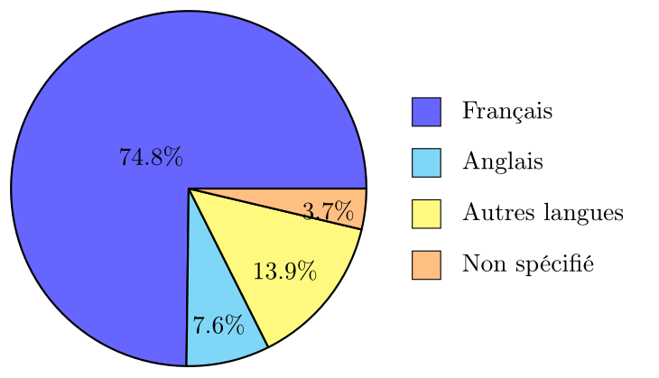
Pour le même ensemble de données, on peut utiliser un diagramme en anneau :
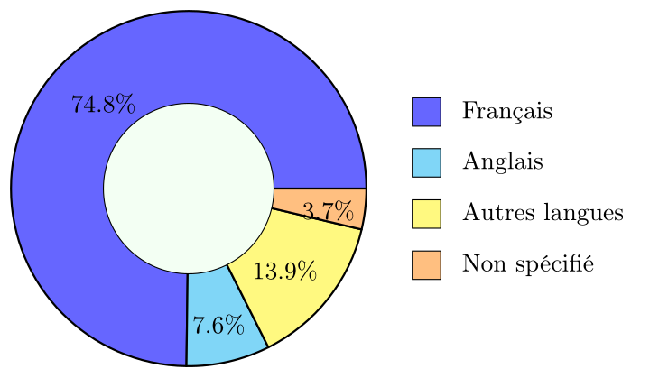
On observe que le français est largement dominant comme langue maternelle au Québec, représentant plus des trois quarts de la population parmi les répondants.
Diagramme en barres (simples, groupées, empilées) — Constitué de barres horizontales dont la longueur est proportionnelle à la fréquence de (ou à la quantité associée à) chaque modalité.
-
Adapté pour indiquer les fréquences de variables qualitatives nominales et ordinales,
-
chaque barre représente une modalité, l'ordre de présentation des barres doit respecter l'ordre naturel des modalités pour les variables ordinales,
-
les barres doivent être espacées pour indiquer que les modalités sont distinctes,
-
les barres groupées ou empilées sont utilisées pour comparer la distribution d'une variable qualitative en fonction d'une autre variable qualitative.
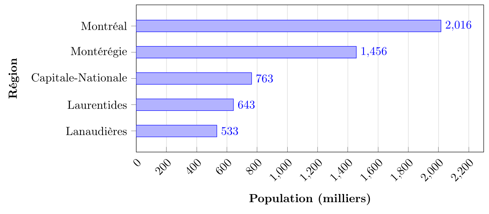
On voit dans ce diagramme en barres que Montréal est de loin la région la plus peuplée, suivie par la Montérégie3.
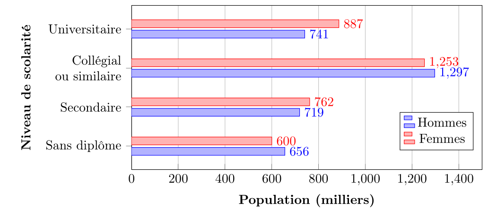
On observe dans ce diagramme en barres groupées que les femmes sont plus nombreuses que les hommes à avoir un diplôme universitaire, tandis que les hommes sont légèrement plus nombreux à s'arrêter au collégial.4
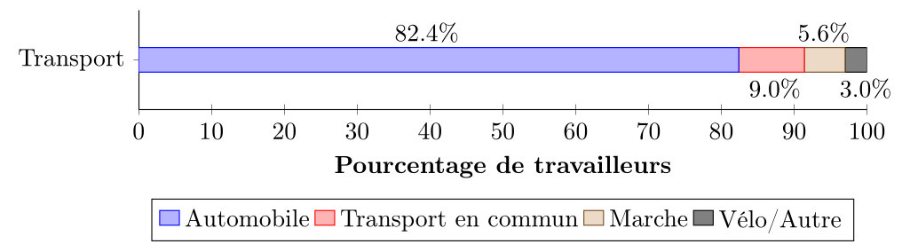
On observe dans ce diagramme en barres empilées que l'automobile domine largement comme mode de transport pour se rendre au travail au Québec, représentant environ 80% des déplacements.5
Diagramme en colonnes (simples, groupées, empilées) — Constitué de barres verticales dont la hauteur est proportionnelle à la fréquence de (ou à la quantité associée à) chaque modalité.
-
Même cas d'usage que les graphiques en barres, mais avec des barres verticales,
-
on le préfère aux diagrammes en barres lorsqu'on veut mettre l'accent sur l'ordre des modalités indiquées sur l'axe horizontal.
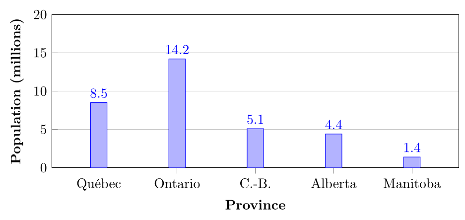
On observe que l'Ontario est la province la plus peuplée, suivie du Québec.6
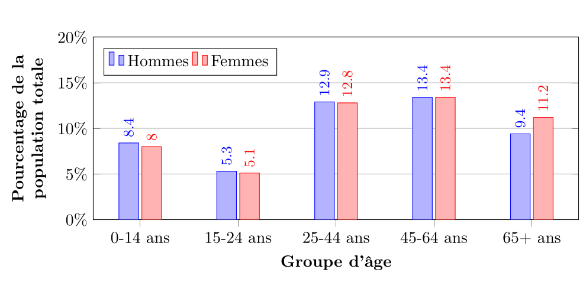
On observe que la répartition par groupe d'âge est similaire entre les sexes, avec une proportion légèrement plus élevée de femmes chez les 65 ans et plus.7
Voici un exemple de diagramme en colonnes empilées basé sur des données du recensement canadien de 20218 concernant le type de logement par région au Québec (en pourcentage) :
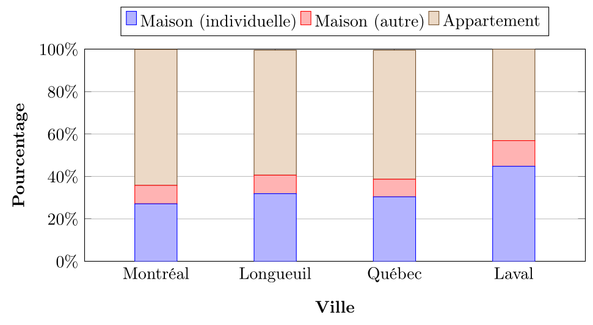
On observe que la composition du parc de logement à Longueuil est plus semblable à celle de Montréal, que celle de Laval à celle de Québec.
Diagramme à bâtons — Constitué de lignes9 verticales dont la hauteur est proportionnelle à la fréquence de (ou à la quantité associée à) chaque modalité. Ce graphique est très semblable aux graphiques en colonnes, mais il est préféré au diagramme en colonnes pour les variables quantitatives discrètes.
-
Chaque bâton représente une valeur possible de la variable,
-
les bâtons doivent être espacés pour indiquer que les valeurs sont distinctes,
-
utile pour visualiser la distribution des données discrètes et identifier les tendances ou les anomalies.
Voici un exemple de diagramme à bâtons basé sur des données réelles du recensement canadien de 202110 concernant le nombre de personnes par ménage au Québec (en pourcentage) :
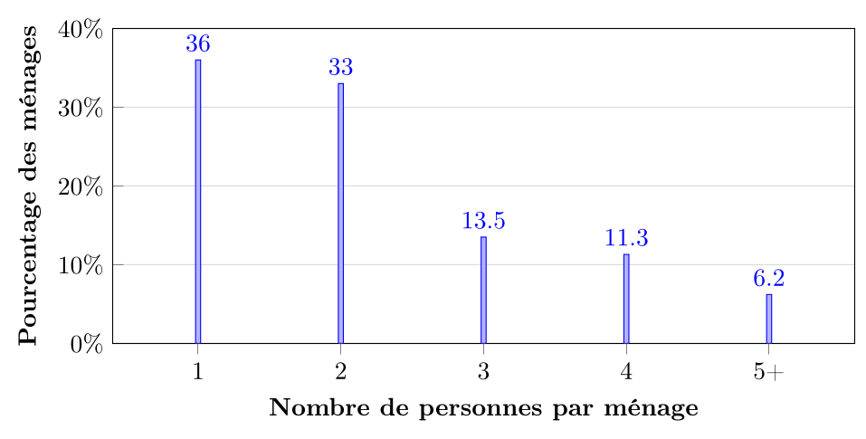
On observe que les ménages d'une ou deux personnes sont les plus fréquents au Québec, représentant ensemble environ 69 % des ménages, tandis que les ménages de cinq personnes ou plus sont relativement rares (6,2 %).
Histogramme — Constitué de barres verticales dont la surface est proportionnelle à la fréquence des valeurs dans chaque intervalle de classe et la largeur de chaque barre est proportionnelle à la largeur de l'intervalle de classe.
-
Adapté pour indiquer les fréquences de variables quantitatives continues,
-
chaque barre représente un intervalle de valeurs (classe) : la largeur de la barre correspond à l'amplitude de l'intervalle de classe. Dans de nombreux cas, les intervalles de classes sont de largeur égale : dans ce cas, la hauteur de la barre est proportionnelle à la fréquence de l'intervalle de classe. Cependant, lorsque les intervalles de classes ont des largeurs différentes, la hauteur de chaque barre doit être ajustée pour refléter la densité de fréquence (fréquence par unité de largeur) afin que la surface totale de chaque barre soit proportionnelle à la fréquence de l'intervalle de classe.
-
Si les classes sont toutes de la même longueur, on peut représenter une autre quantité associée à chaque classe que la fréquence (par exemple, le patrimoine moyen pour des classes de la forme $[20, 25[, [25, 30[, [30, 35[)$...).
-
Les barres sont adjacentes pour indiquer que les valeurs sont continues.
-
Utile pour visualiser la distribution des données continues, identifier les tendances, la dispersion et la présence de valeurs aberrantes.
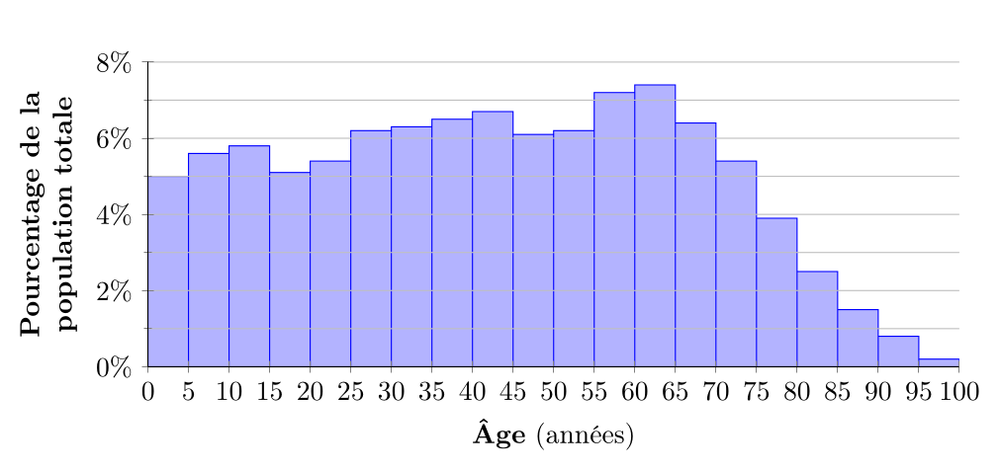
On voit dans ce cas que les groupes d'âge 25-44 ans et 45-64 ans sont les plus nombreux au Québec en 2021.
Il y avait 1975 personnes de plus de 100 ans au Québec en 202111, soit environ 0,0% de la population totale (à une décimale près) et on choisit de ne pas représenter la classe d'âge 100+ dans l'histogramme.
On présente ci-dessous un histogramme de la distribution de la population du Québec par groupe d'âge en 202112, avec des classes d'âge de largeur inégale. L'interprétation de la hauteur des barres est plus difficile : on l'appelle la densité de fréquence. Elle représente la concentration des données dans chaque intervalle de classe.
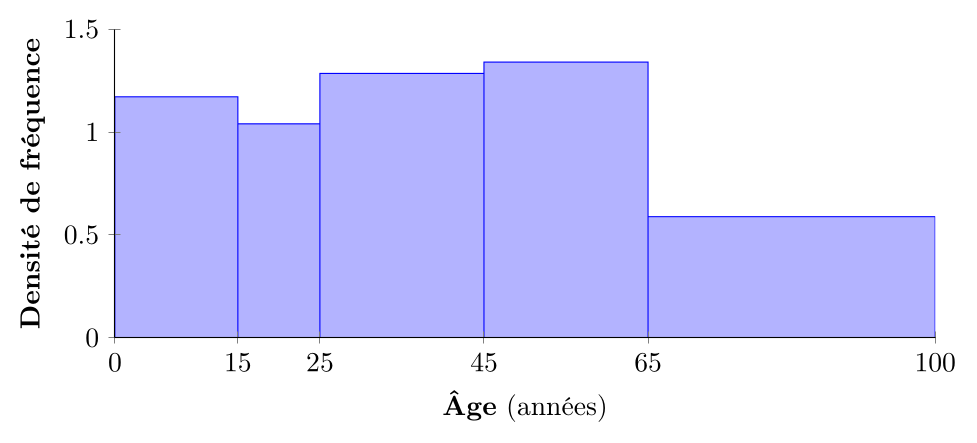
Par exemple, dans ce cas, la concentration de la population dans les classes 0-65 est à peu près la même (autour de 1,1), tandis que la concentration dans la classe 65+ est plus faible (environ 0,59), reflétant la plus grande dispersion des données dans cette dernière classe que dans les autres. On retrouve que la classe 15-25 est la moins concentrée, ce qui correspond au creux observé dans l'histogramme précédent.
Polygone de fréquence — Constitué d'une ligne brisée qui relie les points représentant les fréquences des différentes valeurs ou classes.
-
Adapté pour indiquer les fréquences de variables quantitatives discrètes ou continues,
-
chaque point représente la fréquence d'une valeur ou d'une classe,
-
utile pour visualiser la distribution des données, identifier les tendances et comparer plusieurs distributions.
On présente ci-dessous un polygone de fréquence de la distribution de la population du Québec par groupe d'âge en 2021, avec des classes d'âge de largeur 10 ans.
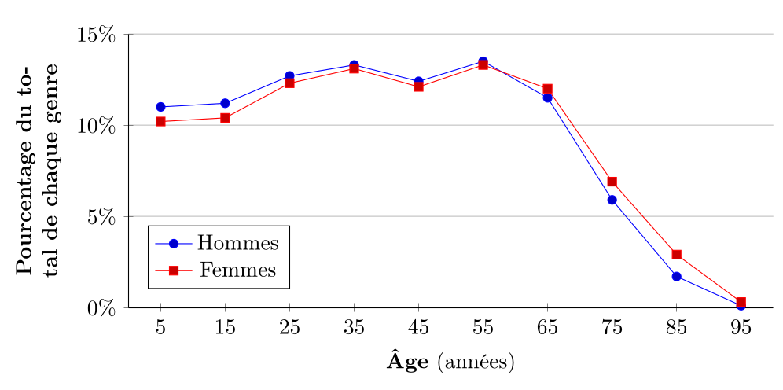
On observe que le polygone de fréquence permet de visualiser plus clairement la tendance générale de la distribution, avec un pic autour de 55 ans et une diminution progressive pour les groupes d'âge plus élevés. On voit aussi une inversion de la répartition entre les femmes et les hommes à partir de 65 ans.
Ogive — Constituée d'une courbe qui représente les fréquences (le plus souvent relatives) cumulées des différentes valeurs ou classes.
-
C'est la même construction qu'un polygone de fréquence, mais appliquée aux fréquences cumulées, ce qui donne systématiquement une courbe croissante,
-
adaptée pour indiquer les fréquences cumulées de variables quantitatives discrètes ou continues,
-
chaque point représente la fréquence cumulée jusqu'à une valeur ou une classe,
-
si on l'applique aux fréquences relatives cumulées, l'ogive part de 0 et se termine à 1 (ou 0% à 100% si on utilise des pourcentages) et permet de lire directement des quantiles (médiane, quartiles, etc.)13.
On présente ci-dessous une ogive de la distribution de la population du Québec par groupe d'âge en 2021, montrant les fréquences relatives cumulées.
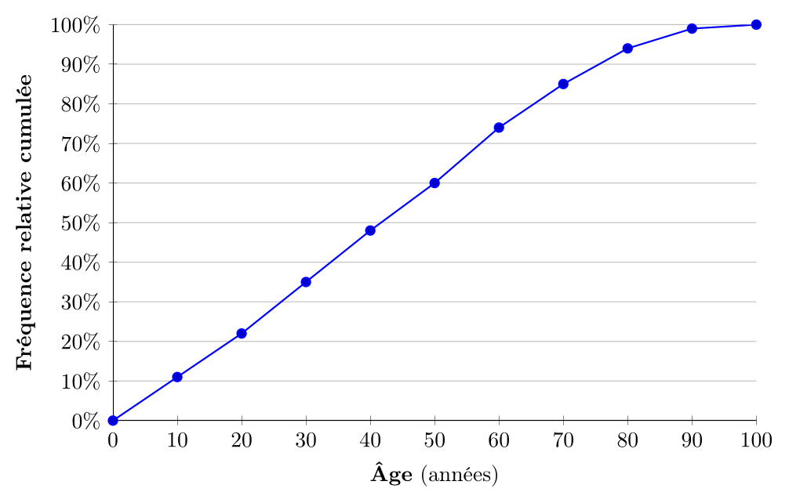
L'ogive permet de lire directement des informations importantes : par exemple, on peut voir qu'environ 50% de la population québécoise a moins de 42 ans (médiane), que 70% de la population a moins de 60 ans, et que 90% a moins de 80 ans. La courbe croissante caractéristique de l'ogive facilite l'identification des quantiles et la comparaison des distributions cumulées : on y reviendra.
III.3.4 Un cas particulier : les séries chronologiques
On appelle série chronologique une série de données quantitatives collectées au fil du temps, le plus souvent à des intervalles de temps réguliers. Si l'intervalle de temps entre les collectes est constant, on l'appelle périodicité de la série. Les séries chronologiques sont utilisées pour analyser les tendances, les cycles et les variations saisonnières dans les données au fil du temps. Les différents types de tableaux et graphiques que l'on a discutés précédemment peuvent être appliqués aux séries chronologiques. Pour les plus adaptés d'entre eux, on utilise souvent un nom différent pour indiquer qu'on travaille avec des données temporelles. Plus généralement,
un diagramme indiquant une variable quantitative en fonction du temps est souvent appelé un chronogramme ou un historiogramme.
Tableau de séries chronologiques : un tableau qui présente les valeurs de la variable mesurée à différents points dans le temps. Chaque ligne du tableau correspond à un point dans le temps (date, heure, etc.) et la (ou les) colonne suivante contient la valeur mesurée à ce moment-là.
| Année | Population (en milliers) | Année | Population (en milliers) | Année | Population (en milliers) |
|---|---|---|---|---|---|
| 1986 | 1 820 | 2000 | 1 833 | 2014 | 1 948 |
| 1987 | 1 834 | 2001 | 1 853 | 2015 | 1 951 |
| 1988 | 1 821 | 2002 | 1 867 | 2016 | 1 961 |
| 1989 | 1 836 | 2003 | 1 871 | 2017 | 1 984 |
| 1990 | 1 823 | 2004 | 1 873 | 2018 | 2 024 |
| 1991 | 1 816 | 2005 | 1 874 | 2019 | 2 059 |
| 1992 | 1 799 | 2006 | 1 877 | 2020 | 2 062 |
| 1993 | 1 795 | 2007 | 1 876 | 2021 | 2 016 |
| 1994 | 1 794 | 2008 | 1 880 | 2022 | 2 035 |
| 1995 | 1 795 | 2009 | 1 895 | 2023 | 2 095 |
| 1996 | 1 798 | 2010 | 1 907 | 2024 | 2 167 |
| 1997 | 1 799 | 2011 | 1 915 | 2025 | 2 172 |
| 1998 | 1 801 | 2012 | 1 927 | ||
| 1999 | 1 815 | 2013 | 1 939 |
Notons que dans cet exemple de tableau de séries chronologiques, le nombre d'années nécessite d'être présenté sur plusieurs colonnes pour éviter que le tableau ne devienne trop large. On peut aussi choisir de présenter les années sur une seule colonne et les populations correspondantes sur une autre colonne, mais cela rendrait le tableau plus long14.
Graphique à lignes brisées : un graphique qui relie les points représentant les valeurs de la variable mesurée à différents points dans le temps avec des lignes droites. Ce type de graphique est particulièrement adapté pour visualiser les tendances et les variations au fil du temps. C'est essentiellement la même construction qu'un polygone de fréquence, mais appliquée aux séries chronologiques sur l'axe horizontal et à une variable quantitative (pas forcément une fréquence) sur l'axe vertical.
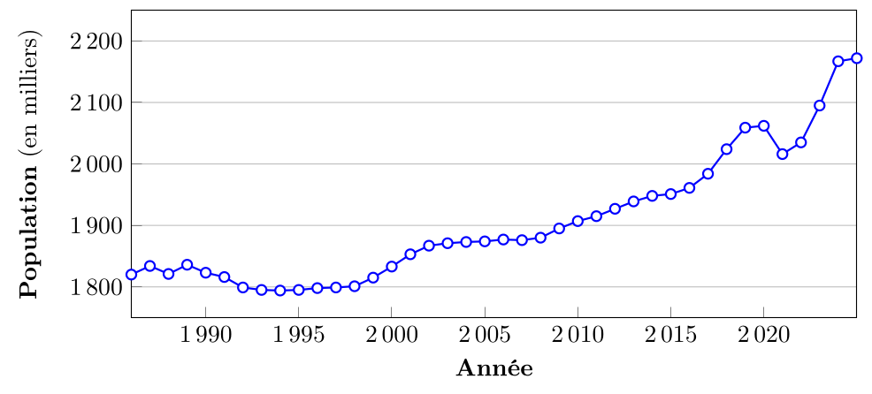
Diagramme en colonnes : similaire à un diagramme en colonnes classique, mais utilisé pour représenter la distribution des valeurs de la variable mesurée sur des intervalles de temps spécifiques. On l'utilise plutôt quand le nombre de périodes est limité et qu'on veut insister sur la comparaison entre ces périodes.
III.3.5 Pourquoi et comment présenter les données ?
L'intérêt de visualiser les données
On l'a vu, plus on récolte un grand nombre de données, plus les informations que l'on va en extraire seront riches et précises. Cependant, à partir d'une certaine quantité de données, il devient impossible d'obtenir une vue d'ensemble en examinant simplement les données brutes. Par exemple, si on a un échantillon de 10 000 individus avec plusieurs variables mesurées pour chacun, il est pratiquement impossible de comprendre la distribution des données ou les relations entre les variables en regardant simplement la matrice de données. C'est là qu'intervient la présentation des données sous forme de tableaux et de graphiques. Ces outils permettent de résumer et de visualiser les données de manière à en extraire des informations clés rapidement et efficacement.
Souvent, d'un seul ensemble de données, on peut extraire plusieurs tableaux ou graphiques, chacun mettant en lumière un aspect différent des données : une variation au cours du temps ou entre groupes, la répartition des mesures en fonction des valeurs, la relation entre plusieurs variables, etc. Chaque tableau ou graphique, dans un certain sens, "élimine" une partie de l'information contenue dans les données brutes pour se concentrer sur un aspect particulier. C'est pourquoi il est important de choisir judicieusement les tableaux et graphiques à utiliser en fonction des questions de recherche que l'on souhaite explorer : un seul graphique peut être trompeur s'il est mal choisi ou mal interprété.
Règles de présentation
Lors de la présentation des données, que ce soit sous forme de tableaux ou de graphiques, il est essentiel de suivre certaines règles pour assurer la clarté et la lisibilité des informations. Voici quelques règles générales à respecter :
-
Titres et légendes : Chaque tableau ou graphique doit avoir un titre clair et descriptif. Les axes des graphiques doivent être correctement étiquetés avec les unités de mesure le cas échéant. Les légendes doivent expliquer les symboles, couleurs ou styles utilisés.
-
Numérotation : si votre document comporte plusieurs tableaux ou graphiques, il faut les numéroter (Tableau 1, Figure 1, etc.) pour permettre d'y faire référence sans ambiguïté dans le texte.
-
Ordre logique : Les modalités ou classes doivent être présentées dans un ordre logique, que ce soit par ordre croissant/décroissant pour les variables ordinales et quantitatives, ou dans un ordre significatif pour les variables nominales.
-
Échelles appropriées : Choisir des échelles appropriées pour les axes des graphiques afin de représenter fidèlement les données sans distorsion : on évite autant que possible les échelles tronquées ou non proportionnelles qui pourraient induire en erreur.
Dans certains cas particuliers, on peut utiliser une échelle logarithmique pour mieux visualiser des données avec une large gamme de valeurs : il est alors utile d'attirer l'attention du lecteur sur ce choix dans le titre, les étiquettes des axes ou la légende.
-
Simplicité : Éviter les éléments superflus qui peuvent distraire ou compliquer la lecture des données. La simplicité favorise la compréhension. On évitera les dégradés de couleurs, les effets 3D, les ombres portées, etc.
-
Cohérence : Utiliser des styles, couleurs et formats cohérents à travers tous les tableaux et graphiques pour faciliter la comparaison. Cela permet au lecteur de ne pas avoir à réapprendre la signification des éléments visuels à chaque nouvelle figure.
-
Sources et notes : Inclure des sources de données et des notes explicatives si nécessaires pour clarifier le contexte ou les méthodes utilisées.
D'une façon générale, le but est de réduire au maximum la charge cognitive du lecteur (et en particulier effacer toute ambiguïté qui pourrait être mal interprétée) et de lui permettre de se concentrer sur le contenu du graphique ou tableau plutôt que de passer du temps à décrypter sa forme. En suivant ces règles, on s'assure que les données sont présentées de manière professionnelle et accessible.
À un tableau ou graphique
On pourra suivre la règle générale suivante :
Dans un tableau ou diagramme de fréquences, cela donne plus spécifiquement :
des [unités statistiques] ([groupées par X] si nécessaire)
en fonction de [variable(s)]
+ (année, en pourcentage, en milliers, etc. si nécessaire)
À une colonne de tableau à une entrée
Le titre de la première colonne est le nom de la variable considérée, le nom des colonnes suivantes indique le type d'information contenue dans une case de la colonne. Dans un tableau de fréquences, cela pourrait être "Nombre/pourcentage/fréquence d'[unités statistiques]". Plus généralement, ce pourrait être "Moyenne/Valeur/Maximum/Étendue de [variable mesurée]", etc.
À une colonne dans un tableau à 2 entrées
Dans ce cas, toutes les lignes et colonnes servent à indiquer une valeur/classe/modalité d'une variable, et le type de données contenu dans les cases est indiqué dans le titre du graphique : par exemple, "Répartition de … en fonction de … et de … (pourcentages)", "Budget moyen de … en fonction de … et de … (en dollars)", etc.
| Nom de la variable des lignes | Nom de la variable des colonnes | Total | ||
|---|---|---|---|---|
| Classe 1 | … | Classe $k$ | ||
| Modalité 1 | Le type de données des cases est indiqué dans le titre du graphique. | |||
| … | … | |||
| Modalité $n$ | ||||
| Total | … | |||
Nombre de classes ou modalités
Un point important à considérer lors de la construction d'un tableau ou d'un graphique est le nombre de modalités (pour les variables qualitatives) ou de classes (pour les variables quantitatives) à utiliser. Si on a un faible nombre de modalités ou classes, on peut se permettre de toutes les inclure dans la représentation. Cependant, si elles sont en nombre trop important elles peuvent rendre la présentation confuse et difficile à interpréter. Dans le cas de variables qualitatives avec de nombreuses modalités, on peut regrouper les modalités moins fréquentes en une catégorie "Autres" pour simplifier la présentation ou choisir une représentation plus adaptée. Par exemple, on considère souvent que les diagrammes en secteurs sont à éviter lorsque le nombre de modalités dépasse 7 et on préfère dans ce cas les diagrammes en barres ou en colonnes.
Pour les variables quantitatives, il est souvent nécessaire de regrouper les valeurs en classes (intervalles) pour créer des tableaux ou graphiques lisibles. Soit les données sont déjà regroupées en classes (par exemple, des tranches d'âge), et on peut fusionner certaines classes pour réduire leur nombre si nécessaire. Si, comme c'est plus souvent le cas, il faut créer les classes à partir de données brutes, il faut choisir un nombre de classes approprié. Plusieurs considérations entrent en jeu, mais on choisit le plus souvent des classes de longueur égale, commençant à la valeur minimale observée et finissant à la valeur maximale observée. Le nombre de classes dépend (entre autres) de la taille de l'ensemble de données : plus on a de données, plus on veut de classes, mais on ne veut pas 10 fois plus de classes pour 10 fois plus de données. Une convention répandue est de suivre la règle de Sturges : si le nombre total d'observations est $n$, on choisit le nombre de classes $k$ comme :
$$ k = \lceil 1 + 3.22 \log_{10}(n) \rceil $$
où $\lceil x \rceil$ est la fonction plafond qui arrondit $x$ à l'entier supérieur le plus proche. Cela donne le nombre suggéré de classes en fonction du nombre de données suivant :
| Nombre d'observations ($n$) | Nombre de classes suggéré ($k$) |
|---|---|
| Moins de 23 | 5 |
| De 23 à 45 | 6 |
| De 46 à 90 | 7 |
| De 91 à 180 | 8 |
| De 181 à 361 | 9 |
| De 362 à 723 | 10 |
| De 724 à 1447 | 11 |
| De 1448 à 2895 | 12 |
| Plus de 2895 | 13 ou plus |
Une fois le nombre de classes choisi, on choisit un minimum et un maximum (typiquement la plus petite et la plus grande valeur observée, arrondies respectivement par défaut et par excès à des valeurs "rondes" pour faciliter la lecture) et on divise l'intervalle entre ces deux valeurs en classes de largeur égale.
Si les données vont de 12 à 98 et que l'on a 500 observations, la règle de Sturges recommande de choisir 10 classes. On choisit alors des classes de largeur égale de 10 unités, commençant à 10 (arrondi par défaut de 12) et finissant à 100 (arrondi par excès de 98). On calcule une étendue de classe de $90/10 = 9$. Les classes sont alors $[10,19[, [19,28[, [28,37[, [37,46[, [46,55[, [55,64[, [64,73[, [73,82[, [82,91[, [91,100[$.
Notons qu'on a eu de la chance, car le nombre de classes suggéré divisait proprement l'étendue "arrondie" des données. Considérons des données discrètes allant de 0 à 100 avec 6 classes. L'étendue calculée est alors de $100/6 \approx 16,7$. On peut alors choisir soit d'arrondir l'étendue à 17 et avoir les 6 classes $[0,17[, [17,34[, [34,51[, [51,68[, [68,85[, [85,102[$.
Pour rappel, la notation $[a,b[$ signifie que l'intervalle de classe inclut toutes les valeurs de $a$ à $b$, incluant $a$, mais excluant $b$.
III.4 Interlude : comparer des grandeurs
III.4.1 Comparer avec des quotients
La proportion d'une partie $P$ d'un ensemble $E$ est le rapport $\frac{\text{taille de } P}{\text{taille de }E}$. La proportion est un nombre compris entre 0 et 1, sans unité.
La proportion compare des grandeurs de même nature : des personnes à des personnes, des dollars à des dollars, etc : les unités se simplifient dans le quotient. Comme on compare toujours une partie à un tout, la proportion est toujours comprise entre 0 et 1 : par exemple, la proportion de femmes dans une classe ne peut pas être supérieure à 1 (100 %) ni inférieure à 0 (0 %).
Si dans une classe de 30 étudiants, 18 sont des femmes, la proportion de femmes dans la classe est de $\frac{18}{30} = 0,6$.
Le taux est une proportion exprimée en pour cent, pour mille, pour 10 000, etc.
On utilise des taux exprimés en pour cent/pour mille/pour plus pour rendre les proportions plus lisibles : par exemple, il est plus facile d'interpréter un taux d'échec de 16 % à un examen qu'une proportion d'échec de 0,16. Il est plus facile de discuter du taux d'incidence d'une maladie rare comme valant de 3 pour 1 000 000 plutôt que de 0,000003, ou même 0,0003 %. Typiquement, on choisit donc le taux de manière que les chiffres soient compris entre 1 et 100, pour faciliter l'interprétation.
La prévalence (nombre de cas/taille de la population) de l'autisme au Canada est d'environ 2 %, tandis que le taux d'incidence (nombre de nouveaux cas/taille de la population) est d'environ 3 ‰ (lu 3 pour 1000).
Le ratio de deux grandeurs $A$ et $B$ est le rapport $\frac{A}{B}$. On le note aussi $A:B$ (lu « A pour B »). Les unités du ratio sont les unités de $A$ divisées par les unités de $B$.
Si dans un groupe de 27 personnes, 9 ont une voiture, le ratio voitures/personnes est de $9:27 = \frac{9}{27} = \frac{1}{3}$, soit 1 voiture pour 3 personnes.
Le ratio permet de comparer des grandeurs de nature différente : des voitures par personnes, des dollars par habitant, des professeurs par classe, etc. Si toutefois les grandeurs comparées sont de même nature on peut dans certains cas passer du ratio à la proportion :
$$
\text{Un ratio de } A:B \text{ donne une proportion de } \frac{A}{A+B},
$$
$$
\text{une proportion de } \frac{A}{B} \text{ donne un ratio de } A:(B-A).
$$
Si dans une classe de 30 étudiants, 18 sont des femmes, le ratio femmes/hommes est de $18:12 = \frac{18}{12} = \frac{3}{2}$, soit 3 femmes pour 2 hommes, et on a bien que la proportion de femmes est de $\frac{3}{3+2} = 0,6$.
Un indice à base 100 est un ratio de la forme $\frac{V}{V_0} \times 100$, où $V$ est la valeur de la grandeur que l'on veut comparer, et $V_0$ est une valeur de référence. L'indice à base 100 est un nombre sans unité. On dit que l'indice est « élémentaire » si $V$ et $V_0$ sont des valeurs d'une même grandeur à deux points différents (par exemple, le prix d'un panier de biens en 2025 et en 2020), et que l'indice est « synthétique » si $V$ et $V_0$ sont des valeurs d'une grandeur synthétisant plusieurs grandeurs élémentaires (par exemple, l'indice des prix à la consommation, qui synthétise les prix de plusieurs biens).
III.4.2 Comparer avec des différences
La variation d'une grandeur $V$ entre deux points $A$ et $B$ est la différence $V(B) - V(A)$. On la note $\Delta V$.
Notez que l'on calcule la valeur de $V$ en $B$ moins celle de $V$ en $A$ : on fait « valeur à l'arrivée » moins « valeur au départ ». Par conséquent, si $V$ a augmenté entre $A$ et $B$, $\Delta V$ est positif, et si $V$ a diminué, $\Delta V$ est négatif.
La variation d'une grandeur est exprimée dans les mêmes unités que la grandeur elle-même. Par exemple, si $V$ est une population, $\Delta V$ est exprimé en nombre d'habitants. Si $V$ est un revenu, $\Delta V$ est exprimé en dollars.
Si entre 2025 et 2026, votre salaire est passé de 50 000 $ à 55 000 $, la variation de votre salaire est de $\Delta V = 55\,000 - 50\,000 = 5\,000$ $. Votre salaire a augmenté de 5 000 $ entre 2025 et 2026.
Cependant, la variation « absolue » peut être difficile à interpréter : par exemple, une personne qui travaille pour la première fois pendant l'été et dont les revenus passent de 0 $ à 5 000 $ a une variation de 5 000 $, tout comme la personne qui gagne déjà 50 000 $ et dont le salaire passe à 55 000 $. Pourtant, la première personne a vu son revenu augmenter de manière beaucoup plus importante que la seconde. Pour résoudre ce problème, on parle de variation relative.
La variation relative (ou taux de variation) d'une grandeur $V$ entre deux points $A$ et $B$ est le rapport $\frac{V(B) - V(A)}{V(A)}$. On le note $\frac{\Delta V}{V(A)}$.
Le point de référence, par lequel on divise la variation, est la valeur de $V$ au point de départ $A$. La variation relative est sans unité, car c'est un rapport de deux grandeurs exprimées dans les mêmes unités. Par exemple, si $V$ est une population, la variation relative est un nombre sans unité, qui peut être interprété comme un pourcentage d'augmentation ou de diminution de la population. On peut l'exprimer en pourcentage, auquel cas, la variation relative est :
$$ \frac{V(B)-V(A)}{V(A)} \times 100\ %. $$
Si $V$ a augmenté de 5 000 $ entre 2025 et 2026, et que le salaire initial était de 50 000 $, la variation relative est de $\frac{5\,000}{50\,000} = 0,1$, soit une augmentation de 10 %.
Enfin, si votre salaire est passé de 50 000 $ en 2025 à 55 000 $ en 2026, c'est une augmentation très satisfaisante, plus que si votre salaire était passé de 50 000 $ à 55 000 $, de 2020 à 2025 : c'est la même augmentation de 10 %, mais sur une période plus courte. Pour quantifier cela, on parle de variation moyenne.
La variation moyenne d'une grandeur $V$ entre deux temps $t_0$ et $t_1$ est le rapport de la variation absolue à la durée de l'intervalle de temps entre $t_0$ et $t_1$. On la note $\frac{\Delta V}{\Delta t}$, où $\Delta t$ est la durée entre $t_0$ et $t_1$.
Notez que la variation moyenne est calculée entre deux temps, alors que dans les autres cas, la variation est calculée entre deux points, qui peuvent être des temps, mais aussi d'autres types de points (par exemple, des lieux). L'unité de la variation moyenne est l'unité de $V$ divisée par l'unité de temps. Par exemple, si $V$ est une population exprimée en habitants, et que le temps est exprimé en années, la variation moyenne est exprimée en habitants par an.
Si votre salaire est passé de 50 000 $ en 2020 à 55 000 $ en 2025, la variation absolue est de 5 000 $, la variation relative est de 10 %, et la variation moyenne est de $\frac{5\,000}{5} = 1\,000$ $ par an.
La même augmentation de salaire sur 1 an au lieu de 5 ans correspond à une variation moyenne de 5 000 $/an, soit une augmentation beaucoup plus rapide.
Parler d'une variation d'un pourcentage
Imaginons que le taux de chômage est passé de 5 % à 10 %. Comme la grandeur dont on parle est déjà un pourcentage, il pourrait être confus de dire que le taux de chômage a augmenté de 5 % : est-ce que cela signifie que le taux de chômage est passé de 5 % à 10 % (augmentation de 5 points de pourcentage), ou que le taux de chômage a augmenté de 5 % par rapport à son niveau initial de 5 % pour atteindre 5,25 % (augmentation de 0,25 point de pourcentage) ?
Par convention, quand on parle du pourcentage en tant que nombre sans unité, on parle de points de pourcentage. Par conséquent, dans notre exemple, on dira que le taux de chômage a augmenté de 5 points de pourcentage, et non pas de 5 %. Inversement, si on ne précise pas « points de pourcentage », on suppose que l'on parle d'une variation relative, c'est-à-dire d'une augmentation de 5 % par rapport à 5 %, ce qui correspond à une augmentation de 0,25 point de pourcentage.
III.4.3 Indicateurs démographiques
La variation de population est la variation absolue de la population entre deux points dans le temps.
$$ \Delta P = P(t+1) - P(t), $$
où $t$ est généralement exprimé en années.
On peut décomposer la variation de la population en solde naturel (naissances -- décès) et solde migratoire (immigration -- émigration) :
$$ \Delta P = (N - D) + (I - E), $$
où $N$ est le nombre de naissances, $D$ le nombre de décès, $I$ le nombre d'arrivées (immigration) et $E$ le nombre de départs (émigration) entre les deux points dans le temps.
Pour 2024, le solde migratoire est de 156 700 personnes et le solde naturel de --1 400 personnes (il y a eu plus de décès que de naissances).
Si on veut des mesures relatives, on peut considérer le taux d'accroissement démographique :
$$ \frac{\Delta P}{\text{population initiale}} = \frac{P(t+1) - P(t)}{P(t)} \times 100\ % $$
qui se décompose en taux d'accroissement naturel :
$$ TAN = \frac{N - D}{P(t)} \times 100\ % $$
et taux d'accroissement migratoire :
$$ TAM = \frac{I - E}{P(t)} \times 100\ %. $$
Au Québec, en 2024, selon l'Institut de la statistique du Québec, le taux d'accroissement démographique est de 17,2 ‰.
Le taux d'accroissement naturel se décompose lui-même en taux de natalité
$$ TN = \frac{N}{P(t)} \times 1000\ % $$
moins le taux de mortalité :
$$ TM = \frac{D}{P(t)} \times 1000\ %. $$
Le taux de natalité au Québec en 2024 était de 8,5 ‰.
Étant donné que seules les femmes peuvent donner naissance à des enfants, on peut aussi calculer le taux de fécondité :
$$ TF = \frac{N}{\text{nombre de femmes entre 14 et 49 ans}} \times 1000\ %. $$
On peut spécialiser encore davantage le taux de fécondité en calculant le taux de fécondité par âge :
$$ TFA(a) = \frac{N(a)}{\text{nombre de femmes d'âge $a$}} \times 1000\ %, $$
où $N(a)$ est le nombre de naissances attribuées à des femmes d'âge $a$.
À partir de ces taux, on peut calculer l'indice synthétique de fécondité :
$$ ISF = \frac{1}{1000}\sum_{a=14}^{49} TFA(a). $$
Ce nombre représente le nombre moyen d'enfants qu'une femme aurait au cours de sa vie si la naissance de ses enfants était répartie de manière identique à la répartition actuelle des naissances par âge.
En 2024, l'ISF au Québec était de 1,33, le plus bas jamais enregistré.
Si on imagine que dans une population il y a exactement autant de femmes que d'hommes, et que chaque femme a exactement 1 enfant, chaque personne a 1/2 descendant à la génération suivante : la taille des générations est divisée par deux à chaque fois, et au fur et à mesure que les générations les plus anciennes disparaissent, la population diminue. Inversement, si chaque femme a 4 enfants, chaque personne a 2 descendants à la génération suivante : la taille des générations est multipliée par deux à chaque fois, et au fur et à mesure que les générations les plus anciennes disparaissent, la population augmente.
Mathématiquement, le point d'équilibre où chaque génération est aussi grande que la précédente correspond à 2 enfants par femme. Dans la réalité, pour tenir compte du fait que tout le monde n'est pas fertile, que certaines personnes meurent avant d'avoir des enfants, etc., on considère que le taux de remplacement des générations dans un pays développé comme le Canada est d'environ 2,1 enfants par femme. Par conséquent, si l'ISF est inférieur à 2,1, la population tend à diminuer, et si l'ISF est supérieur à 2,1, la population tend à augmenter.
Résumé du chapitre
Distinction population--échantillon
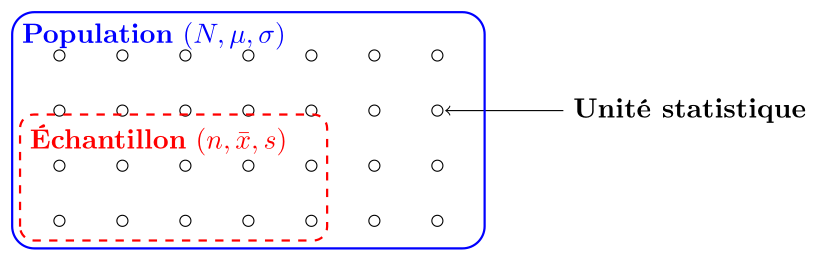
Vocabulaire essentiel
| Terme | Définition |
|---|---|
| Paramètre | Caractéristique de la population (souvent inconnu, noté avec lettres grecques : $\mu$, $\sigma$) |
| Statistique | Caractéristique calculée d'un échantillon (souvent mesurable, noté avec lettres latines : $\bar{x}$, $s$) |
| Unité statistique | Un individu ou élément dans la population/échantillon |
| Variable | Caractéristique mesurée sur chaque unité |
| Donnée | Valeur spécifique d'une variable pour une unité |
Échelles de mesure et opérations permises
| Échelle | Propriétés | Opérations |
|---|---|---|
| Nominale | Classification seulement | $=$ (égal?) |
| Ordinale | Ordre naturel | $=, <, >$ (rangement) |
| Intervalle | Distance mesurable | $=, <, >, +, -$ (différences) |
| Rapport | Zéro absolu | $=, <, >, +, -, \times, \div$ (rapports) |
Variables discrètes vs continues
| Discrètes | Continues |
|---|---|
| Nombre fini de valeurs | Infinité de valeurs possibles |
| Souvent entières | Nombres décimaux |
| Exemples : nombre d'enfants, nombre de voitures | Exemples : taille, poids, température |
Arbre de décision : Types de variables
- En fait, dans la majorité des cas. ↩
- Et d'ailleurs, l'année 0 n'existe pas, on passe directement de -1 à 1. ↩
- Source : statistique.quebec.ca/fr/produit/tableau/3595 ↩
- Source : www12.statcan.gc.ca ↩
- Source : www12.statcan.gc.ca ↩
- Source : www12.statcan.gc.ca ↩
- Source : www12.statcan.gc.ca ↩
- Source : www12.statcan.gc.ca ↩
- Qu'on épaissit souvent en fines colonnes. ↩
- Source : www12.statcan.gc.ca ↩
- Source : www12.statcan.gc.ca ↩
- Source : www12.statcan.gc.ca ↩
- Que l'on définira plus tard. ↩
- Et plus difficile à mettre en page ! ↩